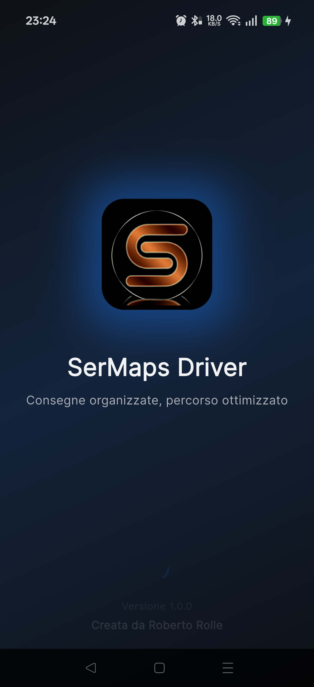
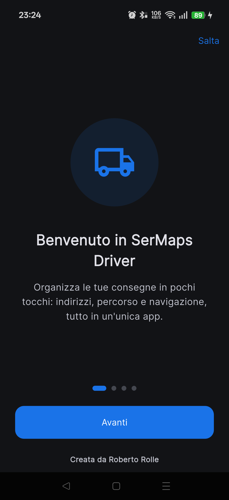
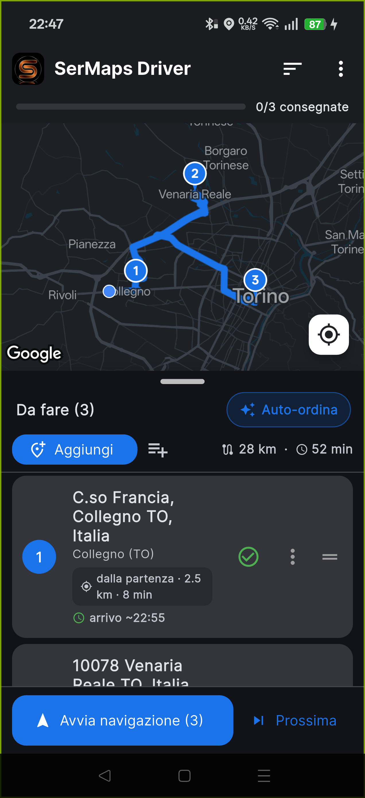
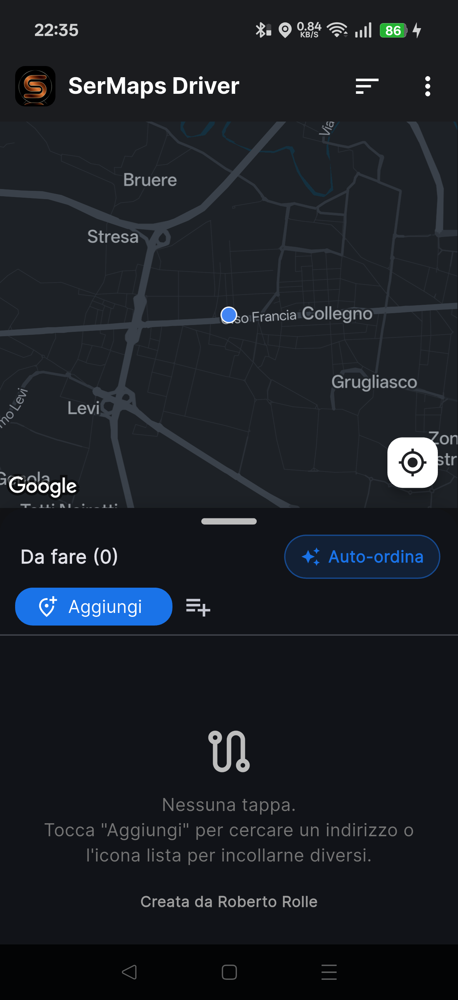
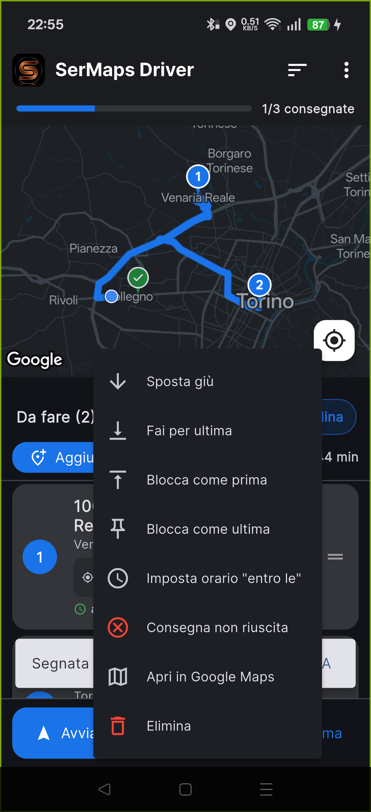
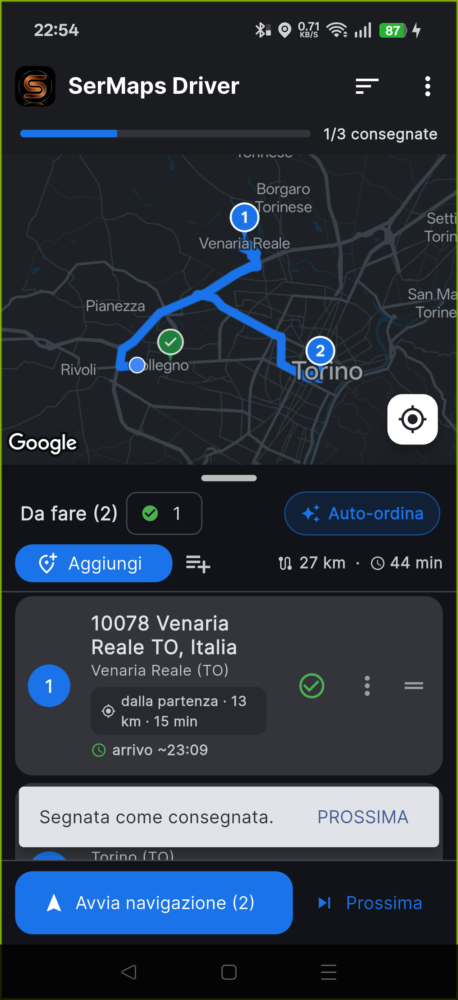
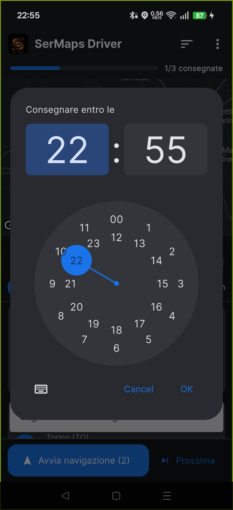
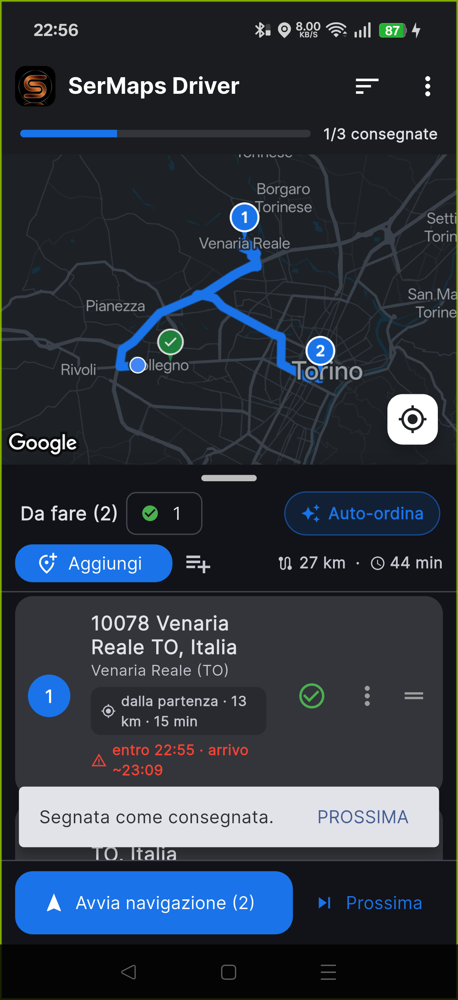
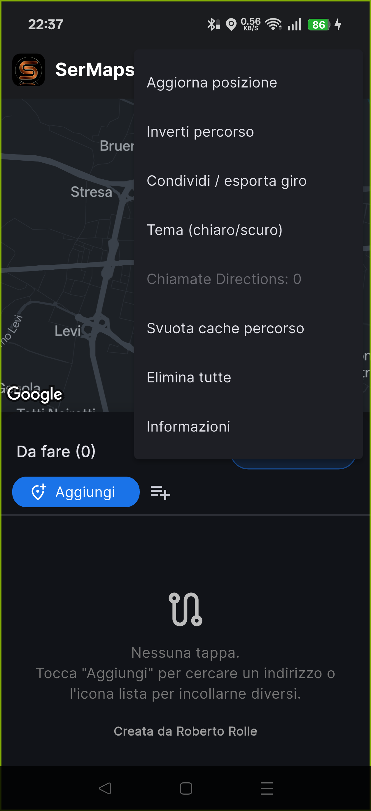
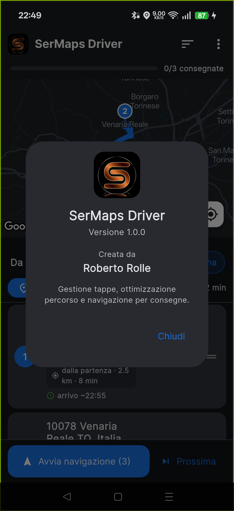

Versione 1.1.7 • Giugno 2026
Creata da Roberto Rolle
Indice
Introduzione
Primo avvio
La schermata principale
Aggiungere le tappe
Ordinare e gestire le tappe
Stato delle consegne
Orari di consegna e arrivo stimato
Avviare la navigazione
Tema chiaro / scuro e colore app
Guida e informazioni nell'app
Suggerimenti utili
Domande frequenti e problemi
1
Introduzione
SerMaps Driver è l'app pensata per chi
effettua consegne o sopralluoghi con più tappe nella stessa giornata.
Raccoglie gli indirizzi, calcola l'ordine più conveniente, controlla gli
orari di arrivo e avvia la navigazione con Google Maps — tutto da
un'unica schermata.
Cosa puoi fare
Aggiungere indirizzi singolarmente o incollando un'intera lista.
Ottimizzare il giro partendo dalla tappa più vicina a te.
Vedere distanza, tempo totale e orario di arrivo stimato per ogni tappa.
Impostare un orario limite ("entro le") con avviso di ritardo.
Segnare le consegne fatte e proseguire alla tappa successiva.
Avviare la navigazione con un tocco.
Requisiti: uno smartphone Android con
connessione dati e GPS attivo. Alla prima apertura concedi il permesso di
posizione per centrare la mappa e ordinare le tappe.
2
Primo avvio
All'apertura compare la schermata di benvenuto animata con il logo dell'app.
Solo la prima volta, una breve introduzione in quattro
passaggi mostra come funziona l'app.
Usa Avanti per scorrere o Salta per andare
subito all'app. Potrai rivederla quando vuoi da
⋮ → Rivedi introduzione.

Schermata di avvio

Introduzione (primo avvio)
3
La schermata principale
La schermata è divisa in due parti: la mappa in alto
e il pannello delle tappe in basso.
Barra di avanzamento (in alto): tappe già
consegnate sul totale (es. 0/3 consegnate).
Mappa: percorso in blu e marcatori numerati nell'ordine di visita.
Riepilogo: distanza e tempo totali (es. 28 km · 52 min).
Lista tappe: indirizzo completo, distanza dalla
precedente e orario di arrivo stimato.
Tocca o trascina la maniglia sopra "Da fare"
per ingrandire la lista a tutto schermo o tornare alla mappa grande.

Mappa, percorso e lista tappe
4
Aggiungere le tappe
Indirizzo singolo
Tocca Aggiungi.
Inizia a scrivere l'indirizzo: compaiono i suggerimenti.
Tocca il suggerimento corretto. Se l'indirizzo è ambiguo, scegli
tra i risultati trovati.
A voce
Tocca Aggiungi, poi l'icona del microfono.
Pronuncia l'indirizzo: vedi l'indicatore «In ascolto…»
e i suggerimenti che compaiono mentre parli. I numeri civici detti a parole
(es. «centotrentotto») diventano cifre (138).
Più indirizzi insieme
Tocca l'icona Incolla lista.
Incolla o scrivi gli indirizzi, uno per riga.
Conferma: vengono aggiunti e geolocalizzati tutti insieme.
Dettagli intervento
Appena scegli un indirizzo, l'app chiede il tipo di intervento
(LIS, IGT, SISAL, TLC, GBO, GLOBAL), eventuali note e la
pausa pranzo del punto (orario continuato oppure orari di
chiusura). Puoi premere Salta: resterà segnato come
«Non definito» e potrai completarlo dal menu ⋮
→ Dettagli / note. Tipo e nota compaiono in alto a destra
sulla tappa.
Indirizzi più precisi (via, civico, città) danno
risultati migliori ed evitano la scelta tra più opzioni.

Schermata iniziale
5
Ordinare e gestire le tappe
Auto-ordina: quando attivo, riordina le tappe partendo
dalla più vicina a te, per evitare giri inutili. Se hai indicato le
pause pranzo, evita di farti arrivare quando il punto è
chiuso, rimandandolo dopo la riapertura.
Sposta a mano: trascina una tappa con l'icona ☰;
l'ordinamento automatico si disattiva e l'ordine resta fisso.
Menu ⋮ su ogni tappa: Sposta su / giù / Fai
per ultima, Blocca come prima / ultima, Imposta orario, Dettagli / note,
Apri in Google Maps, Consegna non riuscita, Elimina.
Elimina rapida: scorri la tappa verso sinistra.
Dal menu in alto: Inverti percorso e
Condividi / esporta giro.

Menu delle azioni su una tappa
6
Stato delle consegne
Tocca la spunta verde per segnare una tappa consegnata.
La tappa esce dalla lista, il pin diventa verde e il
percorso si ricalcola sulle tappe rimaste.
Compare il pulsante PROSSIMA per navigare subito alla
tappa successiva.
Dal menu ⋮ puoi anche segnare una consegna come non
riuscita (pin rosso). Il contatore ✓ apre le
tappe completate, con possibilità di ripristinarle.
Nota: all'interno dell'app la lista e il
percorso si aggiornano da soli. La navigazione in
Google Maps non si riavvia automaticamente: per inviarle il
nuovo ordine tocca di nuovo Avvia navigazione o
Prossima.

Tappa consegnata (pin verde, 1/3)
7
Orari di consegna e arrivo stimato
Per ogni tappa puoi indicare un orario limite entro cui consegnare.
Apri il menu ⋮ della tappa.
Tocca Imposta orario "entro le".
Scegli l'ora e conferma.
L'app calcola l'orario di arrivo stimato (ETA) in base ai
tempi reali del percorso. Se l'arrivo previsto supera l'orario limite, la tappa
viene evidenziata in rosso con un avviso.
In ritardo: "entro 22:55 · arrivo
~23:09" in rosso significa che con l'ordine attuale arriveresti dopo l'orario
richiesto. Spostala più in alto o usa l'ordinamento
"Orario di consegna".

Selettore orario

Avviso di ritardo
8
Avviare la navigazione
Avvia navigazione: apre Google Maps e fa partire
direttamente la guida lungo il giro. Con più di 10 tappe, l'app avvia
il primo "giro" e indica quante tappe restano per i successivi.
Prossima: avvia subito la navigazione verso la prossima
tappa da consegnare.
Flusso consigliato sul campo: Avvia
navigazione → consegni → segni la tappa come consegnata →
Prossima (per aggiornare Google Maps), e avanti così
fino a fine giro.
9
Tema chiaro / scuro e colore app
Da ⋮ → Tema (chiaro/scuro) puoi scegliere:
Sistema — segue l'impostazione del telefono
Chiaro
Scuro — ideale per la guida di sera
Da ⋮ → Colore app puoi scegliere il
colore accento (Blu, Verde, Viola, Arancio, Rosso, Teal):
tinge pulsanti, pin numerati e il marcatore della tua posizione.
Entrambe le scelte vengono salvate e mantenute ai successivi avvii.
10
Guida e informazioni nell'app
Dal menu ⋮ in alto a destra trovi tutte le opzioni,
tra cui:
Guida — questo manuale, consultabile direttamente nell'app
Rivedi introduzione — riapre la presentazione iniziale
Informazioni — versione e autore

Menu opzioni

Informazioni
11
Suggerimenti utili
Tieni il GPS attivo: l'ordinamento parte dalla tua posizione reale.
Per giri lunghi, segna le tappe man mano: la lista resta pulita e il
percorso nell'app si ricalcola da solo (ricorda di toccare
Prossima per aggiornare Google Maps).
Tocca una tappa nella lista per centrarla sulla mappa.
Usa Blocca come prima/ultima per le tappe con vincoli
(es. ritiro iniziale o deposito finale).
Condividi giro per inviare la lista a un collega.
Indirizzi in cache: quelli già cercati vengono memorizzati,
così reinserirli è immediato e funziona anche offline.
Annulla (UNDO): se elimini tutte le tappe o segni una tappa
per errore, compare un avviso con ANNULLA per ripristinare.
Più di 10 tappe: l'app mostra "Giro 1 di N"
e avvia il primo giro; completate quelle, tocca di nuovo
Avvia navigazione.
Fine giro: vedi un riepilogo (completate,
non riuscite, km e durata) e il pulsante Nuovo giro.
Testo più grande: l'app rispetta l'ingrandimento testo del
telefono per una migliore leggibilità.
12
Domande frequenti e problemi
La mappa resta grigia
La chiave Google Maps non è configurata o non è
autorizzata. Verifica che nel progetto Google Cloud siano attive
Maps SDK for Android, Geocoding, Places e Directions.
Non trova gli indirizzi
Controlla la connessione dati. Se la ricerca dà sempre
errore, la chiave API potrebbe avere una restrizione "App
Android": per le ricerche serve impostarla su "Nessuna"
con limitazione per API. Scrivi indirizzi più precisi
(via, civico, città).
Le tappe non si ordinano da sole
Attiva l'interruttore Auto-ordina e assicurati che
il GPS sia acceso: l'ordine parte dalla tua
posizione. Se hai spostato una tappa a mano, l'auto-ordina si
disattiva apposta.
Google Maps non si aggiorna quando consegno
È normale: dentro l'app la lista si aggiorna da sola, ma la
navigazione in Google Maps va rilanciata toccando
Prossima o Avvia navigazione.
Ho più di 10 tappe
Google Maps gestisce al massimo 10 tappe per percorso: l'app avvia
il primo "giro" e ti indica quante restano. Completa il primo blocco,
poi tocca di nuovo Avvia navigazione.
Arrivo segnato in ritardo (rosso)
L'orario di arrivo stimato supera l'orario limite impostato. Sposta
la tappa più in alto, oppure usa l'ordinamento
"Orario di consegna".
L'app chiede la posizione
Concedi il permesso di posizione: serve a centrare
la mappa e a calcolare l'ordine delle tappe. Puoi gestirlo dalle
impostazioni del telefono.